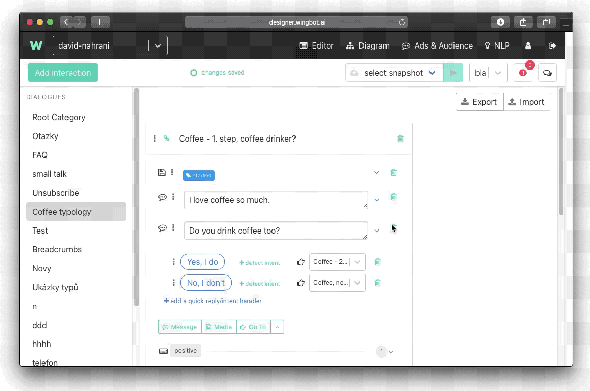
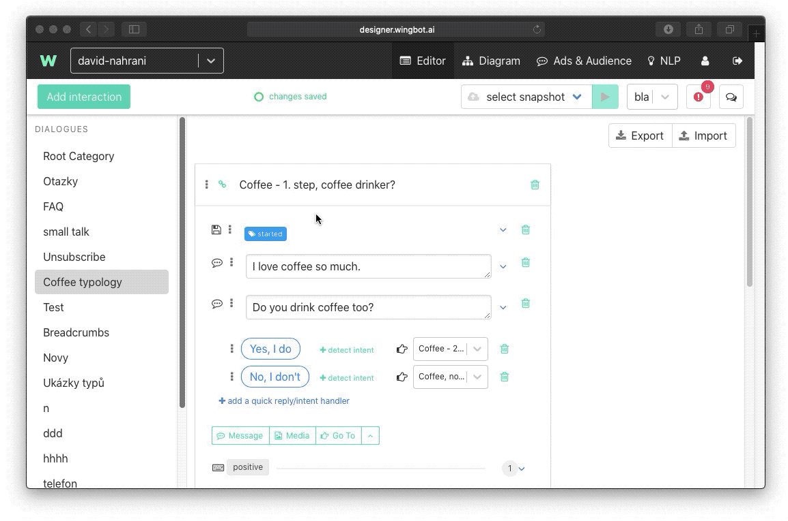
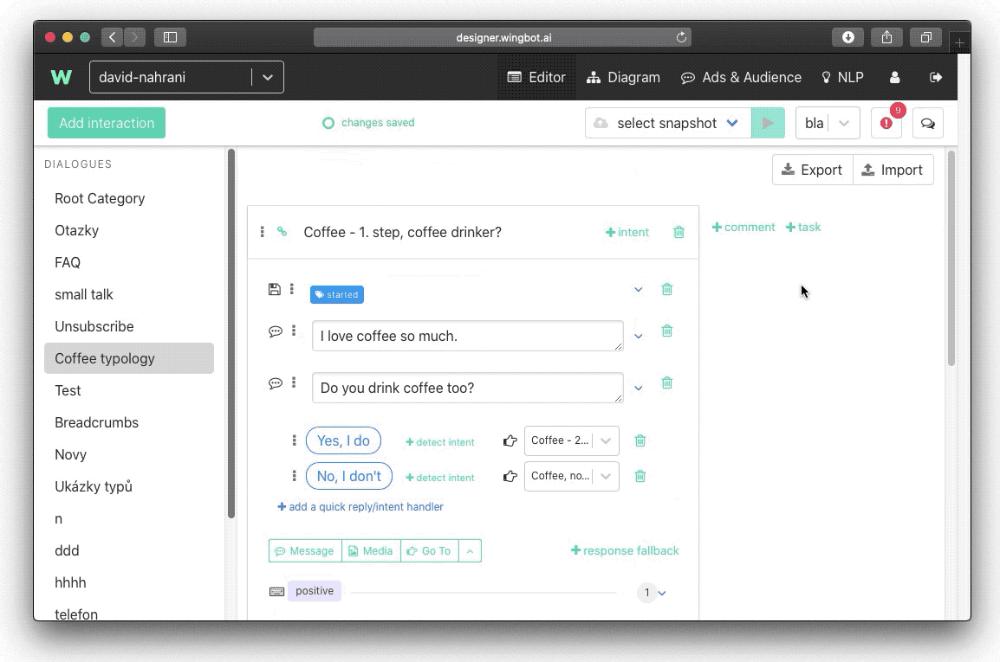
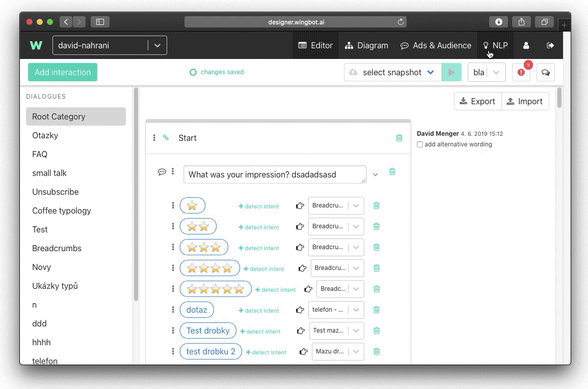

Import & export
There are times when you want to replicate something that you did somewhere in the past. Maybe you are creating a similar chatbot to the one you designed before. Maybe you want to duplicate components you developed, conversation patterns you found useful and functioning among chosen audience. Maybe you developed some snippet and you want to use it without coding it again. Maybe you want to duplicate some intent from one chatbot to another.
In all those cases there is a much simpler and much time efficient method in designing your chatbot than repeat manually what you did once before. You can either use import & export or copy & paste shortcuts. And you can use those options in the conversation patterns and in NLP section of your chatbot.
Conversations
There is a possibility that you can export one whole dialogue. This means that you will export both interactions and intents. You can start at the top-right corner with a button Export.

With this button you will export whole conversation in a form of a json file. You will probably find it in your Downloads folder. This json file you can import it in another chatbot. We suggest that you create new empty dialogue.
Then push the Import button and choose your json file from a directory where it is placed.
Importing to existing dialogue
It is also possible to import dialogue to existing dialogue. In that case Designer won’t overwrite existing dialogue, but add up interactions at the end of this dialogue. There is a possibility that you will have some interactions with the same name. Designer will alert you in the alert section in the upper right corner. All you need to do is to either rename one of the conversations or delete it.
If you will have in the same Dialogue the same name of the intent, all the imported utterances won’t add up to the existing one.
Copying with keyboard shortcuts
You can also choose only some interactions you want to copy from one chatbot to another. Every interaction has in the upper left hand corner three vertical dots. With pushing them, the green border around it will tell you, it’s selected. After selecting them, you can hit the copy shortcut ctrl+c (or cmd+c) to copy the interaction, or ctrl+x (or cmd+x) to cut the interaction.

Then you find a dialogue where you want to paste those interactions and hit the paste shortcut.
When using shortcuts, no training data are exported in contrast with using buttons for import and export.
You can also select multiple interactions with holding shift button on your keyboard. You copy and paste them equally.

Import and export in NLP
You can use the same Import & Export feature in the NLP section of the Designer.

You can choose different formats and there are some differences between them.
- TSV is a universal format that you can open in any spreadsheet editor
- Fasttext is a plain, normalised text format without diacritics and with all small letters
- JSON comprises entities. And it is a specific format for Wingbot obsahuji oba entity.
- Rasa also comprises entitities
Nevertheless the procedure is the same. First Export intents. But remember that you will export all the intents. There is no possibility to export just some selected intents. If you want to insist to keep only some selected intents, you can edit the file in a text editor.
What happens if you have same intent in the exported file and the chatbot you are importing to? Utterances of the intent will add up to the existing ones. So we suggest that you validate training set for possible duplicates in the intents.